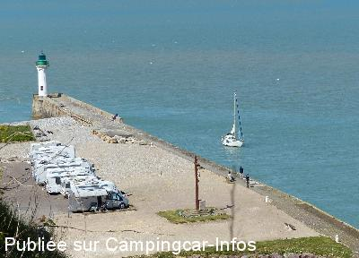
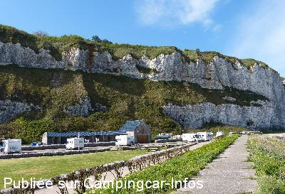
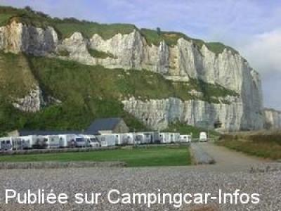
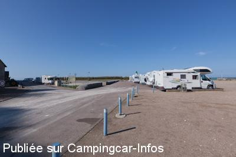
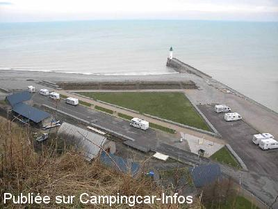

ASN = Aire de services avec stationnement nuit possible de :
SAINT VALERY EN CAUX
(N° 503)
Accès/adresse :
Quai d'Aval
Le Port
76460 SAINT VALERY EN CAUX
Le Port
76460 SAINT VALERY EN CAUX
Latitude : (Nord) 49.8723° Décimaux ou 49° 52′ 20′′
Longitude : (Est) 0.70843° Décimaux ou 0° 42′ 30′′
Tarif : 2016
Stationnement du 15/05 au 02/11 et week-end : 5 €
Eau : 3 €
Taxe de séjour : 0,20 €
Jetons à l'office du tourisme.
Type de borne : EURO-RELAIS
Services :


Tous commerces
Autres informations :
Fermé de novembre à mars
40 emplacements
Tel mairie + 33 (0)235 970 022
http://www.plateaudecauxmaritime.com/

Le 18/04/2014 par migalec

Le 18/04/2014 par migalec

Le 12/05/2011 par olive mimi

Le 19/04/2011 par lestienne jean louis

Le 11/03/2010 par skluka
de
boutdebois
le 19/12/2015 :
aire fermée jusqu'au 31 mars pour cause de sécurité (rafales de vent)
aire fermée jusqu'au 31 mars pour cause de sécurité (rafales de vent)
de
annick et bernard
le 13/08/2015 :
effectivement accès étroit mais nous n avons rencontré personne.les emplacements sont un peu justes autrement bien placée prés du port et de la plage.
effectivement accès étroit mais nous n avons rencontré personne.les emplacements sont un peu justes autrement bien placée prés du port et de la plage.
de
bubu54480
le 07/03/2015 :
Nous avons passé 2 nuits sur cette aire de service qui est très bien placée, proche centre ville et vue sur la mer. la borne fonctionne mais elle est mal fougue pour vidanger les eaux grises. Certes nous y étions que début mars, du coup seulement 5 CC sur l aire, on avait de la place, je suppose que c est pas pareil en plein saison.
Nous avons passé 2 nuits sur cette aire de service qui est très bien placée, proche centre ville et vue sur la mer. la borne fonctionne mais elle est mal fougue pour vidanger les eaux grises. Certes nous y étions que début mars, du coup seulement 5 CC sur l aire, on avait de la place, je suppose que c est pas pareil en plein saison.
de
maquet
le 16/08/2014 :
De passage en Juin 2014, très déçus par cette aire surtout lorsque vous vous trouvez façe à la falaise avec vue sur de vieux bâtiments, la borne est en mauvais état, les c.c.viennent vous serrez au maximum au point d'être obligés de plier le rétro pour pouvoir passer!! Une nuit nous a suffit, surtout qu'il faut prendre garde de ne pas se trouver façe à façe avec un autre c.c. l'un des deux doit faire marche arrière (la galère!)
De passage en Juin 2014, très déçus par cette aire surtout lorsque vous vous trouvez façe à la falaise avec vue sur de vieux bâtiments, la borne est en mauvais état, les c.c.viennent vous serrez au maximum au point d'être obligés de plier le rétro pour pouvoir passer!! Une nuit nous a suffit, surtout qu'il faut prendre garde de ne pas se trouver façe à façe avec un autre c.c. l'un des deux doit faire marche arrière (la galère!)
de
mimi14
le 05/08/2014 :
Je dis que de s'aventurer sur cette air en pleine saison est très risqué surtout avec un grand camping car. Pour y accéder, vous arrivez par une rue étroite où 2 camping-cars ne peuvent pas se croiser. A éviter. Il faudrait vraiment que la commune pense autrement l'arrêt des camping cars pour visiter la ville. Avis au maire.
Je dis que de s'aventurer sur cette air en pleine saison est très risqué surtout avec un grand camping car. Pour y accéder, vous arrivez par une rue étroite où 2 camping-cars ne peuvent pas se croiser. A éviter. Il faudrait vraiment que la commune pense autrement l'arrêt des camping cars pour visiter la ville. Avis au maire.
de
jiji02
le 21/06/2014 :
Franchement pas terrible.
De passage 13 juin 2014, les CC sont les uns sur les autres, les emplacements sont petits , comme des places de parking. Impossible de se croiser sur la route d'accès. Stationnement en bord de mer, les jours de grand vent il faut subir!. Falaise devant les emplacements, réception TV très difficile.
Franchement pas terrible.
De passage 13 juin 2014, les CC sont les uns sur les autres, les emplacements sont petits , comme des places de parking. Impossible de se croiser sur la route d'accès. Stationnement en bord de mer, les jours de grand vent il faut subir!. Falaise devant les emplacements, réception TV très difficile.
de
migalec
le 18/04/2014 :
Bonjour, nous avons séjourné du 17 au 18 avril 2014. Nous avons eu énormément de chance car à 16h30 une place se libérait et nous en avons profité. Plusieurs véhicules sont arrivés après nous et ont du rebrousser chemin. Bel endroit avec une vue sur le phare, le chemin d'accès ne permet pas à deux véhicules de se croiser, il faut qu'un des deux fasse une marche arrière...
Cette aire est ouverte toute l'année, payante les week-ends (du vendredi au dimanche) : du 1er mars au 15 mai et du 16 octobre au 31 octobre, ainsi que les jours fériés.Payante tous les jours à partir du 16 mai jusqu'au 15 septembre.
5,00 euros la nuitée + taxe de séjour
Bonjour, nous avons séjourné du 17 au 18 avril 2014. Nous avons eu énormément de chance car à 16h30 une place se libérait et nous en avons profité. Plusieurs véhicules sont arrivés après nous et ont du rebrousser chemin. Bel endroit avec une vue sur le phare, le chemin d'accès ne permet pas à deux véhicules de se croiser, il faut qu'un des deux fasse une marche arrière...
Cette aire est ouverte toute l'année, payante les week-ends (du vendredi au dimanche) : du 1er mars au 15 mai et du 16 octobre au 31 octobre, ainsi que les jours fériés.Payante tous les jours à partir du 16 mai jusqu'au 15 septembre.
5,00 euros la nuitée + taxe de séjour
de
Deneir Antoon
le 26/09/2013 :
14/09/2013
Antoon & Bea
Deze zeer goede gelegen aire is werkelijk overbelast ,zelfs 2e week Sept.Als U niet in de eerste rij kan staan is het zicht op de kliffen niet zeer aangenaam.Gelukkig kan U s'morgen wel een plaatsje vinden als U er meerdere dagen blijft.5€ tijdend de week-ends is resonabel,maar 3.50€ voor 10 min. water is wat te veel(jeton af te halen bij de touristische dienst)In het stadje zijn er voldoende en goede restaurants,vooral in het mosselseizoen voor 12€.Aangename plaats ondanks de drukte.
14/09/2013
Antoon & Bea
Deze zeer goede gelegen aire is werkelijk overbelast ,zelfs 2e week Sept.Als U niet in de eerste rij kan staan is het zicht op de kliffen niet zeer aangenaam.Gelukkig kan U s'morgen wel een plaatsje vinden als U er meerdere dagen blijft.5€ tijdend de week-ends is resonabel,maar 3.50€ voor 10 min. water is wat te veel(jeton af te halen bij de touristische dienst)In het stadje zijn er voldoende en goede restaurants,vooral in het mosselseizoen voor 12€.Aangename plaats ondanks de drukte.
de
a&b
le 21/07/2013 :
marcher et visiter 28.05.2013
grand parking, probablement occupé rapide 25 CC pendant la nuit, près de la ville
Bel emplacement, service non testé
Merci équipes Camping Car
marcher et visiter 28.05.2013
grand parking, probablement occupé rapide 25 CC pendant la nuit, près de la ville
Bel emplacement, service non testé
Merci équipes Camping Car
de
Pierre
le 08/09/2012 :
De passage ce 4 septembre 2012 , toujours très bien
mais alors , sur fréquenté , des campingcars stationnés
en zone interdite , ( certains bloqués le matin dans
les galets ) une voiture qui vient s'intercaler
à quelques cm pour faire du camping voiture !
Tout cela dans la bonne humeur , mais cela fait
bazar .... Dommage
De passage ce 4 septembre 2012 , toujours très bien
mais alors , sur fréquenté , des campingcars stationnés
en zone interdite , ( certains bloqués le matin dans
les galets ) une voiture qui vient s'intercaler
à quelques cm pour faire du camping voiture !
Tout cela dans la bonne humeur , mais cela fait
bazar .... Dommage
de
Eric Monteyne
le 12/06/2012 :
Verbleven er op 8 & 9 juni en er een heerlijke storm meegemaakt. Wat een mooie plaats om er een paar dagen te verblijven pal aan zee en op wandelafstand van het centrum. Het weggetje van het centrum naar de camperplaats is smal maar zeker geen probleem.
Verbleven er op 8 & 9 juni en er een heerlijke storm meegemaakt. Wat een mooie plaats om er een paar dagen te verblijven pal aan zee en op wandelafstand van het centrum. Het weggetje van het centrum naar de camperplaats is smal maar zeker geen probleem.
de
jocelyne
le 17/09/2011 :
de passage le 15 aout j ai trouvé l air de repos complet, meme un fourgon garer sur la station de vidange, mais surtout la route pour arriver au parking qui est trés dangeureuse pas possible de se croiser;il faut faire marche arriere et le long du canal pas trés prudent meme si on conduit bien
il faudrait mettre un feu au debut de la route pour facilité la circulation (message a transmettre a la mairie)
de passage le 15 aout j ai trouvé l air de repos complet, meme un fourgon garer sur la station de vidange, mais surtout la route pour arriver au parking qui est trés dangeureuse pas possible de se croiser;il faut faire marche arriere et le long du canal pas trés prudent meme si on conduit bien
il faudrait mettre un feu au debut de la route pour facilité la circulation (message a transmettre a la mairie)
de
katia
le 15/07/2010 :
Aire pas pratique d'accès, le chemin qui y conduit n'est pas très large pour 2 véhicules qui se croisent. De plus, quand c'est complet, on doit ressortir par là où on est entré, alors bonjour les manoeuvres. Perso, on a fait demi-tour sur l'aire de vidanges ! Malgré cela, cette aire existe et c'est tant mieux pour ceux qui y trouve une place.
Aire pas pratique d'accès, le chemin qui y conduit n'est pas très large pour 2 véhicules qui se croisent. De plus, quand c'est complet, on doit ressortir par là où on est entré, alors bonjour les manoeuvres. Perso, on a fait demi-tour sur l'aire de vidanges ! Malgré cela, cette aire existe et c'est tant mieux pour ceux qui y trouve une place.